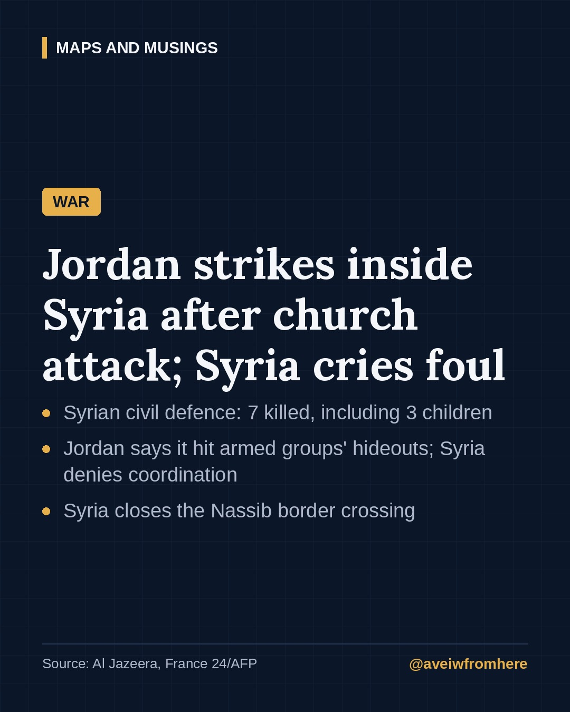
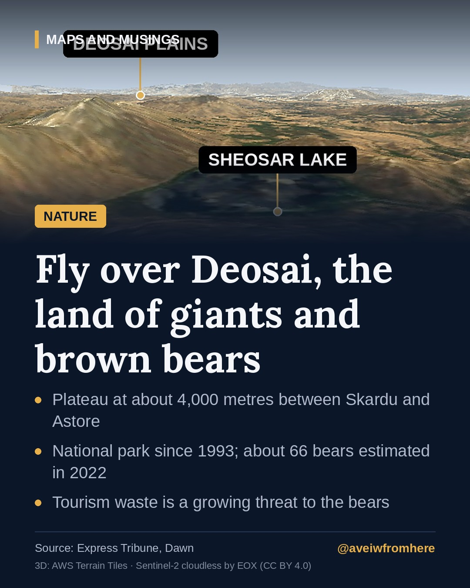
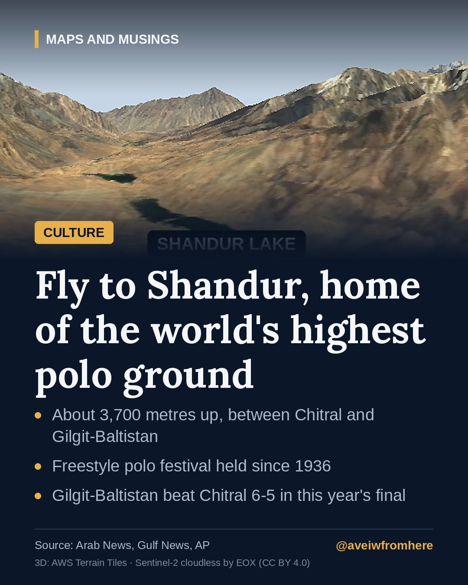
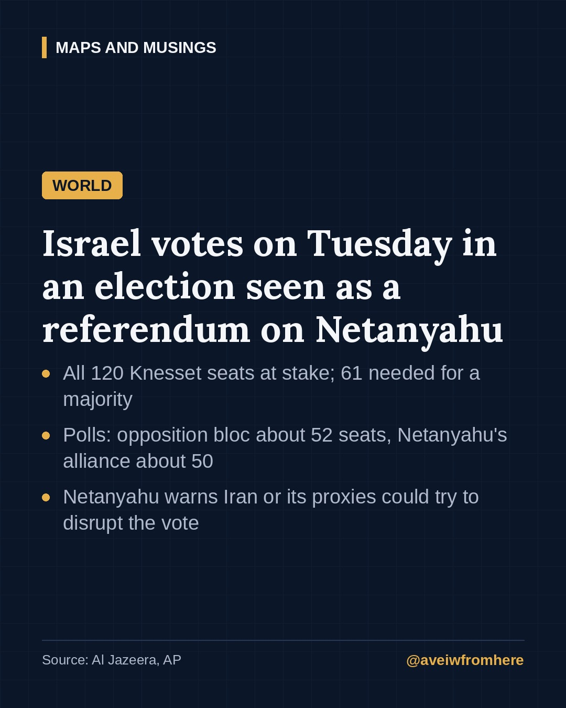
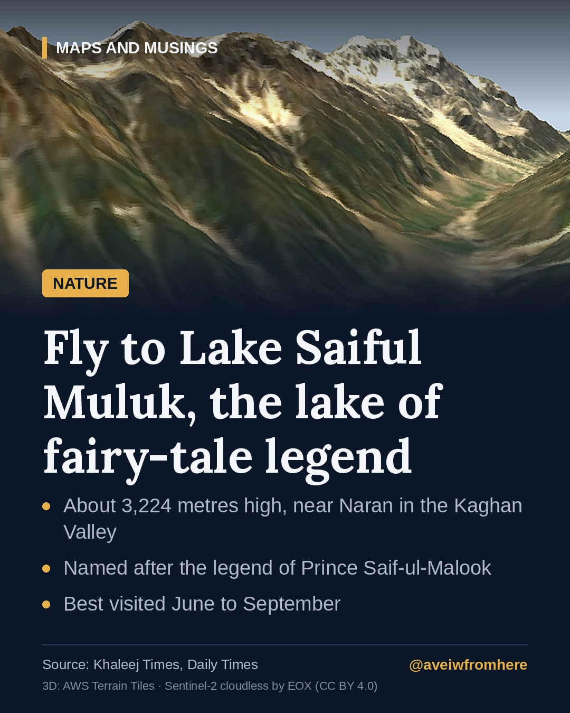
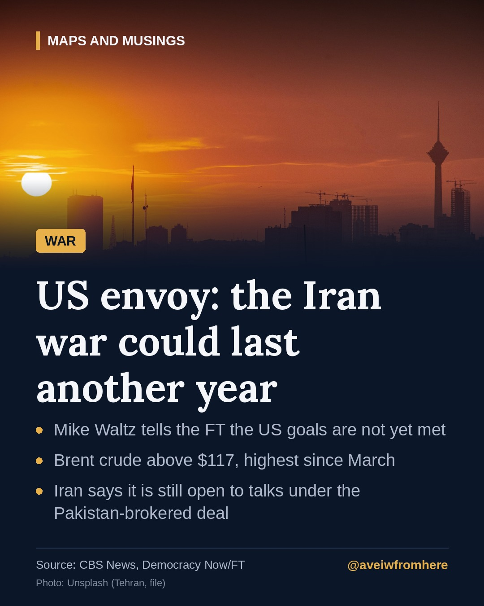
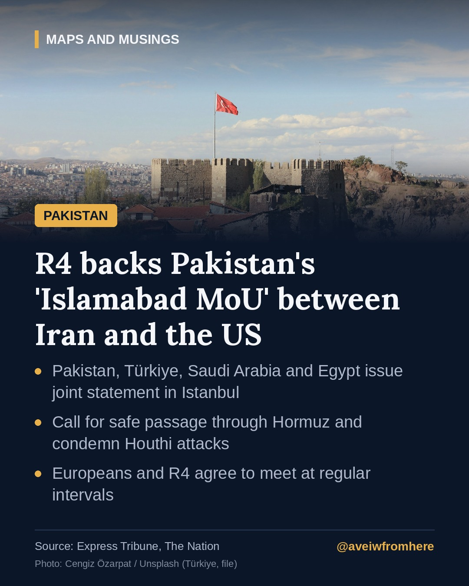
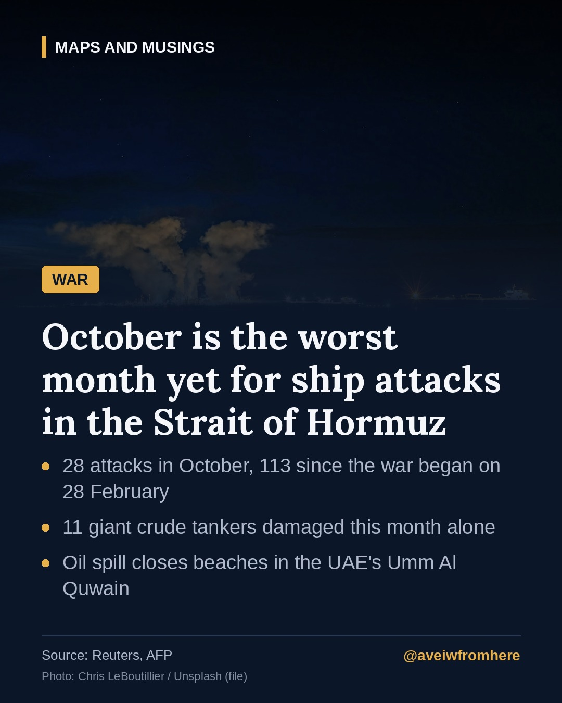
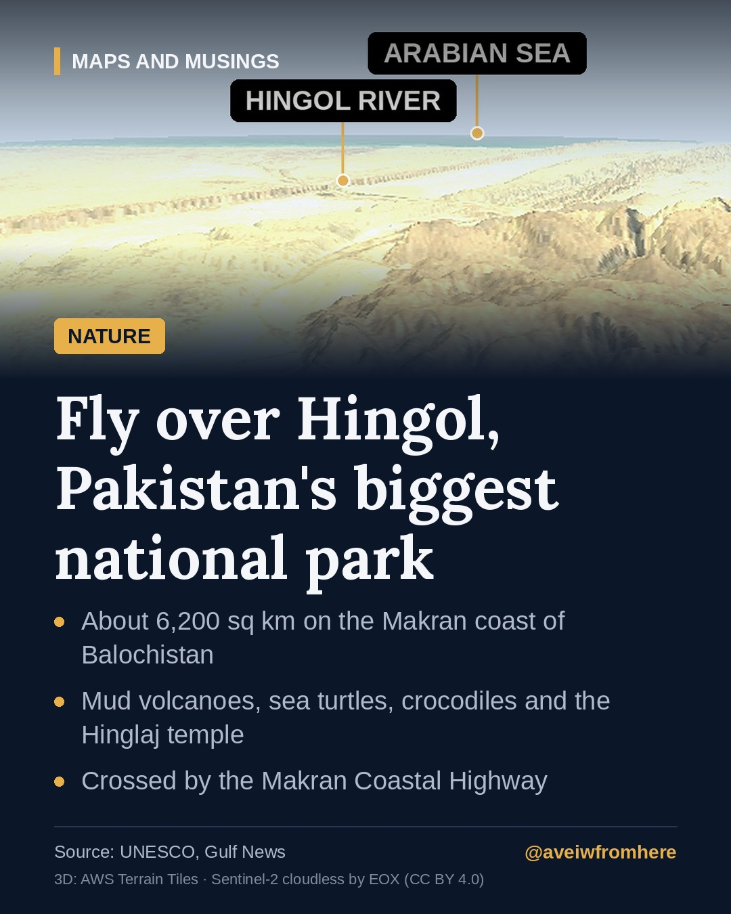

Pakistan and the world, explained.
Fact-checked stories on politics, the region, world news, nature and heritage.

Why the State Bank just raised interest rates to 12%
The State Bank of Pakistan has made its first rate hike since June, lifting the policy rate by half a percentage point as war-driven energy costs push inflation above target.

Jordan strikes Syria after the Karak church attack: what we know
After a deadly attack on a church in Karak, Jordan launched air strikes in southern Syria. Syria says civilians were killed and denies any coordination, and the main border crossing is closed.

Deosai: the land of giants and Pakistan's brown bears
High between Skardu and Astore, the Deosai Plains are one of the world's highest plateaus and a refuge for the Himalayan brown bear. But growing tourism and grazing are putting pressure on the park.

Shandur: polo on the roof of the world
At about 3,700 metres, the Shandur Pass hosts the world's highest polo ground and a festival of freestyle mountain polo that dates back to 1936.

Pakistan, Saudi Arabia and Türkiye send top officials to Tehran to head off a new war
Field Marshal Asim Munir, Saudi Defence Minister Khalid bin Salman and Türkiye's intelligence chief are in Tehran, pressing for a deal between Iran and the United States.

Israel's election, explained: a referendum on Netanyahu in wartime
Israelis vote on 27 October for all 120 Knesset seats. Polls show neither bloc near a majority, and the result will shape the war with Iran and the future of Gaza.

Lake Saiful Muluk: the high lake of a fairy-tale legend
Near Naran in the Kaghan Valley, Lake Saiful Muluk sits about 3,224 metres high beneath glaciers and Malika Parbat, and carries one of Pakistan's best-loved legends.

Lahore tops the world's pollution rankings as smog season begins
Lahore's air was rated 'hazardous' and the worst of any major city on Friday morning. Rain brought brief relief on Saturday, but the smog season has only just started.

US envoy says the Iran war could last another year as oil tops $117
Washington's UN ambassador says US goals in Iran are not yet met, oil has hit its highest level since March, and Tehran says it is still open to talks under the Pakistan-brokered interim deal.

Istanbul talks: four nations back Pakistan's 'Islamabad MoU' on Iran and the US
At their meeting in Istanbul, Pakistan, Türkiye, Saudi Arabia and Egypt endorsed the Pakistan-brokered understanding between Iran and the United States, then met Europe's big powers for the first time.

Hormuz: October becomes the worst month yet for attacks on ships
Researchers counted a record 28 attacks on vessels in and around the Strait of Hormuz in October, as an oil spill reached UAE beaches and Iran reportedly drew up plans to target undersea internet cables.

Hingol: Pakistan's biggest national park, where mud volcanoes meet the sea
On the Makran coast of Balochistan, Hingol National Park combines desert mountains, a river estuary, sea turtles, mud volcanoes and one of South Asia's most important pilgrimage sites.

The UN says this El Niño could be 'off the charts'. What that means
The World Meteorological Organization warns the Pacific could run 3.8°C above average this winter, and the UN has released $50 million to help the most exposed countries prepare.

Pakistan's army chief in Tehran as US-Iran talks stall
Field Marshal Asim Munir held talks with Iran's top leadership on reviving negotiations with Washington. Tehran says the US must move first.

Hunza's two forts and the mountain that watches over them
Baltit and Altit forts tell the story of the Hunza kingdom, and Rakaposhi's 7,788-metre peak towers over them both. A short guide.

France under curfew after a weekend of riots
Night curfews now cover parts of Paris, Lyon, the Lille area and Nice after protests turned violent, six months before France's presidential election.

Badr: what we know about the new Pakistan-Türkiye-Qatar-Indonesia defence pact
Four Muslim-majority countries have signed a memorandum in Doha on joint defence production, training and research. Here is what it covers, and what it does not.

Attabad Lake: the lake that was born from a disaster
In 2010, a massive landslide blocked the Hunza River. The water that rose behind it became one of Gilgit-Baltistan's best-known sights.